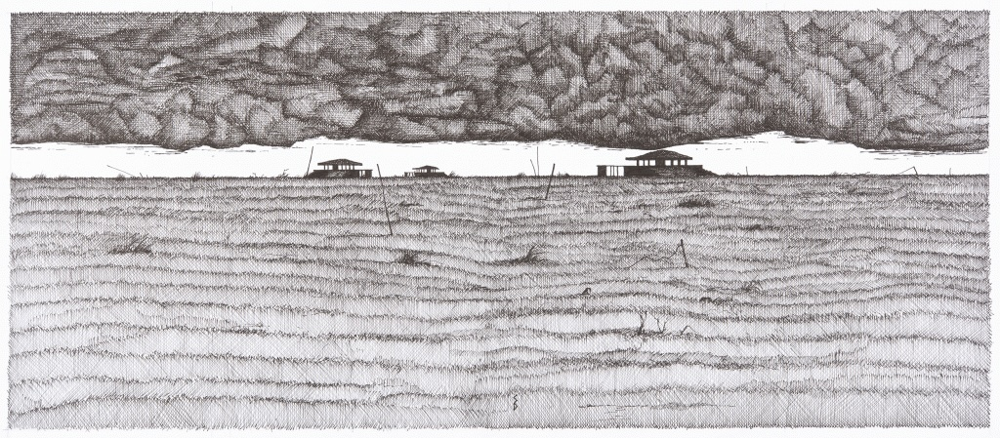

2026-06 | Map and Territory
It takes a while of living somewhere for the map to start matching the territory.
Know who you are is often-given advice, but know where you are is more
useful — for things to make sense you have to understand what’s around you and how you fit
into it. I am steadily filling in the blank spaces these past months — I know where
to get cheap vegetables, nails, kimchi, where to go for a swim, where to catch a show,
where to watch the football. For a slightly inexplicable reason (ok, very explicable:
my partner’s enduring lawful goodness) we have a family membership to the Norfolk
Museums Service and have learned lots about coastal fishing villages. We have a running
tier list of playgrounds, weighted mostly by how much F. likes the slides.
I have two favourite coffee shops within half a kilometer, which complement each other
nicely: the first serves oat milk and weighs the single-origin beans, the second is owned
by a cheery Bulgarian who serves coffee that tastes like cigarettes and greets the
general public with a delightfully angular take on the British greeting “you all right?”.
The brits manage to roll it into one syllable — yaaallriiigh?, the Slavic rendition is a
very existential YouALLRRRAIIGHT? Non-british anglophones talk a lot about how unnerving
“you all right” is as a casual greeting, and it’s true, you’re not supposed to reply whether
you’re alright or not, you’re just supposed my to say hiya, and it took me a long time
to supress my instinctive responses of “up and not crying” and “I’m fine, I’m from Slavic Europe,
this is just my face.”
I finally finished Deborah Levy’s My Year in Paris with Gertrude Stein, which, despite
being about things I tend to like, I couldn’t find my way to. Partly it was the author’s tendency
to portentous but ultimately shallow sentences:
Like the rise of fascism everywhere, the pigeons were out in full. What?
My paper about the evolution of
Southern Ocean winds was published — my first, and probably last, paper in atmospheric dynamics?
Anyway, the ozone hole is healing, which is a friendly reminder that we can do useful things at
scale when we put our minds to it.
We went to First Light. The somewhat-rundown coastal town of Lowestoft went to Arts Council
England with the rough pitch of “hey you know how solstice is part of Britain’s heritage,
druids and things, and how we’re the easternmost point in all of England so we’ll be the
very first people to see the sun? can we have a bunch of money to have a free community party on the beach?”
This turns out to be a brilliant conceit for a festival! Notably, having a festival
for everyone really worked here: not “everyone who can get a ticket to Glastonbury” or
“everyone who knows where the rave is”, but properly the general public, teens doing the chacha
slide (?!) on the boardwalk, fiesty grans, local drunks, babies, all of it. It had music, of course,
ranging from quite good to comically bad, but also microscope stations to look at phytoplankton and 4 AM yoga on
the beach to greet the dawn, followed by a five AM swim in the North Sea and a feast of bread and fishes
(local smoked mackerel, ofc). I biked fast to the train at seven in the morning with hair still salty, took a chain ferry
for a pound, got called love by the ferryman, at the station a local gran reminisced about listening to Dylan
open with She Belongs to Me at the Isle of Wight in 1969 (no, really), a train nap, home in time take a small
person to the park by 10. Save some mornings!
I'd been wanting to go to Orford Ness for years and we finally did -- an uninhabited shingle spit, properly liminal,
bird reserve, former ballistics testing site for atomic weapons, former broadcast point for The BBC World Service
♥︎. MacFarlane's book Ness is ok, Stanley Donwood's
illustrations in it are brilliant.

My partner made окро́шка during the hottest day of June, which may be the best thing I’ve ever eaten,
definitely was that day, and which he had managed to keep from me for the better part of a decade.
Start with half kefir, half sparkling water. Add the following, finely diced: radishes, hard boiled eggs,
cucumber, dill, cooked chicken (optional), potatoes. Smooth mustard and lemon to taste, lots.
Serve post-refrigerator, better the second day, obviously. The kefir and dill came from Euromax,
whose working definition of “Euro” extends some way into Central Asia and where you can also buy camel milk.
Things to read this summer, from J’s digression in a public policy newsletter:
Albert Cossery, Adania Shibli, Elena Ferrante, Juan Goytisolo, Joan Didion, Josef Jedlička.
Free association for summer travels: I still return to Didion’s
impeccable packing list.
Sun salutations from the queen herself: ☀